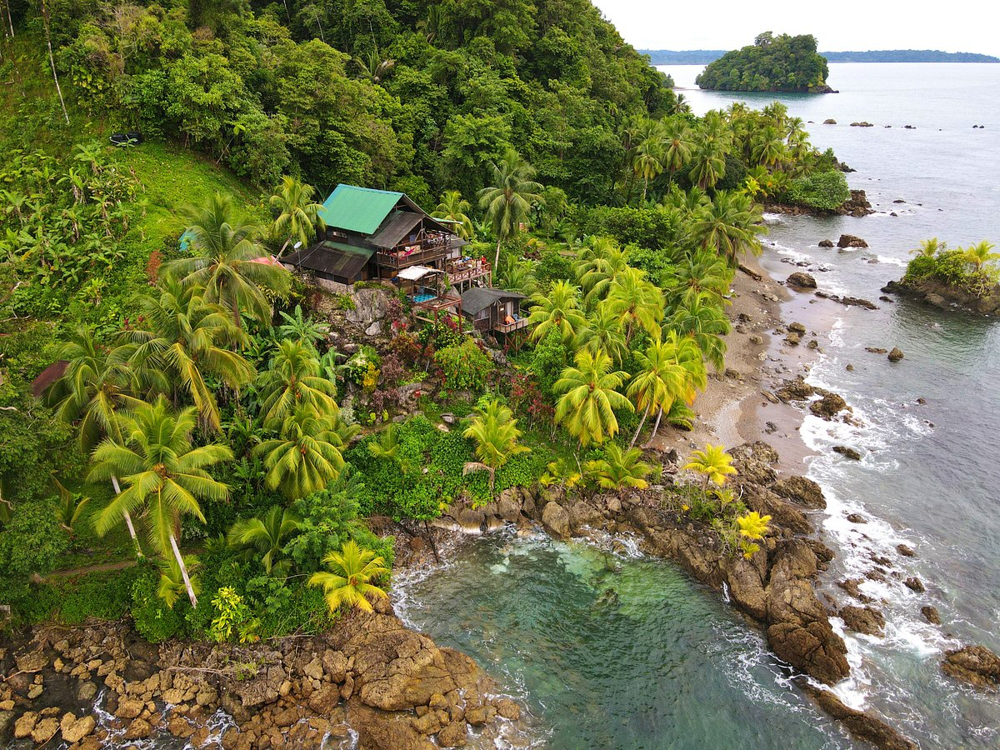

¡Bienvenido a la Feria Local de Nuqui-Chocó!
Descubre la vibrante cultura y las tradiciones de nuestra comunidad en la Feria Local anual la costa chocuana. Únete a nosotros para una celebración del talento local, comida deliciosa y artesanías únicas.
Acerca de la Feria
La Feria Local de Nuqui es un evento anual dedicado a mostrar lo mejor de nuestra comunidad local. Desde platos tradicionales hasta productos hechos a mano y emocionantes presentaciones culturales, hay algo para que todos disfruten.
Ubicada en el departamento del Chocó, la feria ofrece una maravillosa oportunidad para conectar con vecinos, apoyar a artesanos locales y experimentar la rica herencia de Antioquia.